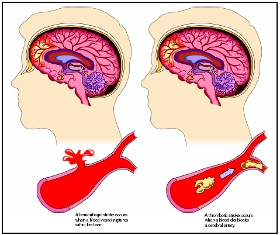

O AVC (Acidente Vascular Cerebral) resulta da restrição de irrigação sanguínea ao cérebro.

A interrupção da irrigação sanguínea e consequente falta de glicose e oxigénio necessários ao metabolismo, provocam uma diminuição ou paragem da actividade funcional na área do cérebro afectada (Rocha, 2003).
Se a interrupção do aporte sanguíneo demorar menos de 3 minutos, a alteração é reversível, no entanto, se ultrapassar os 3 minutos, a alteração funcional pode ser irreversível, provocando necrose do tecido nervoso.
O AVC pode ser causado por 2 mecanismos distintos, por uma oclusão ou por uma hemorragia (Cohen, 2001).
Um AVC isquémico ocorre quando um vaso sanguíneo é bloqueado, frequentemente pela formação de uma placa aterosclerótica ou pela presença de um coágulo que chega através da circulação de uma outra parte do corpo (Cohen, 2001).
A arteriosclerose produz a formação de placas e progressiva estenose do vaso. As suas sequelas são então a estenose, ulceração das lesões arterioscleróticas e trombose (Sullivan, 1993).
A trombose cerebral refere-se à formação ou desenvolvimento de um coágulo de sangue ou trombo no interior das artérias cerebrais, ou de seus ramos. Os trombos podem ser deslocados, “viajando” para outro local, sob a forma de um êmbolo (Sullivan, 1993).
Os êmbolos cerebrais são pequenas porções de matéria como trombos, tecido, gordura, ar, bactérias, ou outros corpos estranhos, que são libertados na corrente sanguínea e que se deslocam até as artérias cerebrais, produzindo a oclusão e enfarte (Sullivan, 1993).
O AVC pode ainda ocorrer por um ataque isquémico transitório. Este, refere-se à temporária interrupção do suprimento sanguíneo ao cérebro (Sullivan, 1993).
Um AVC hemorrágico (acontece em 10% dos AVC’s) ocorre devido à ruptura de um vaso sanguíneo, ou quando a pressão no vaso faz com que ele se rompa devido à hipertensão. A hemorragia pode ser intracerebral ou subaracnoideia. Em ambos os casos, a falta de suprimento sanguíneo causa enfarto na área suprida pelo vaso e as células morrem (Cohen, 2001).